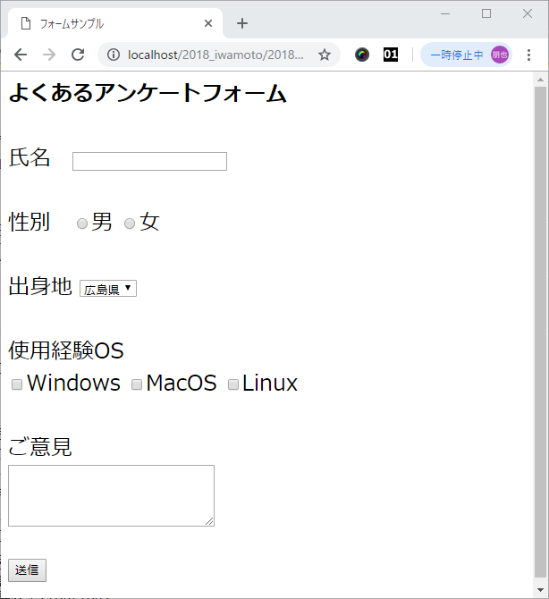
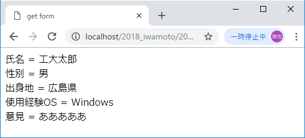
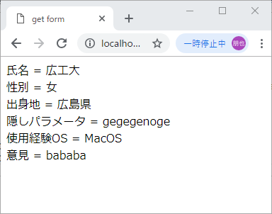
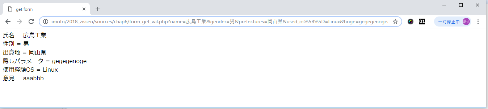
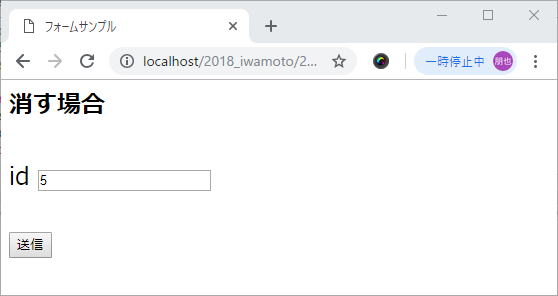
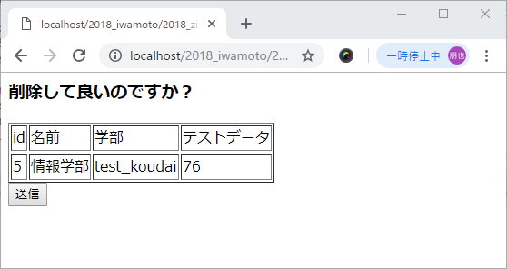
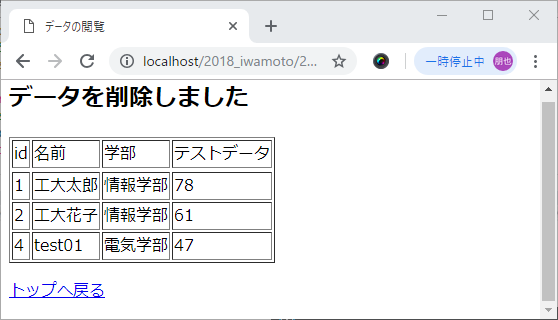
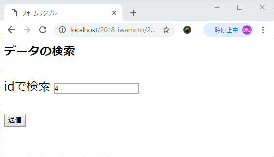
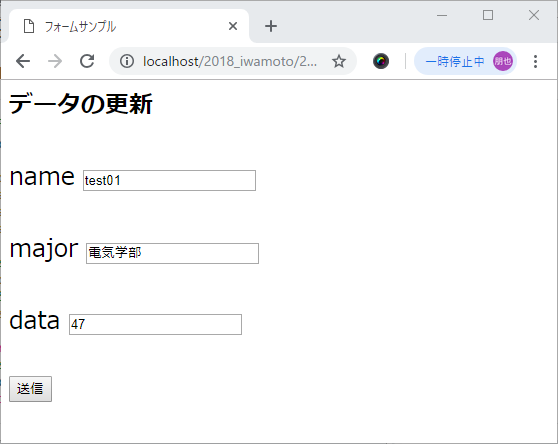
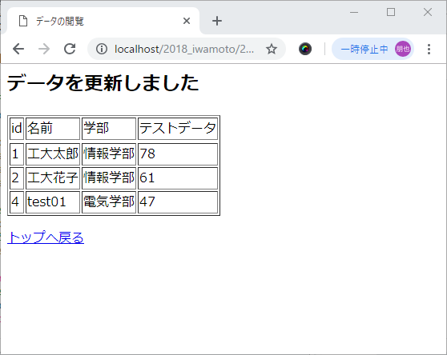

htmlとphpを使ってフォームを作成しましょう。
（注）MySQL 4.1以上では，これらのデータベースの構造の記述にはUNICODEのutf-8コードのみが使われるようになりました．2006年9月時点では，例えばシフトJISコードで記述したフィールド名等はutf-8コードへ変換はされません．入力を拒否されます．詳細は， http://www.mysql.gr.jp/frame/modules/bwiki/index.php?cmd=read&page=FAQ#content_1_40を参照してください．
フォームの基礎となる部分を作成します。
まずはフォームの入力画面「form.html」を作成します。formのactionにはデータを送るファイルの名前を書きましょう。
フォームは以下のように作ります
「form.html」
<html> <head>フォームサンプル </head> <body> </body> </html>
アクセスすると下のように表示されます
次に送られたデータの表示をphpで作りましょう。methodを「post」にした場合、値は「$_POST["クラス名"]」で取得することができます。
「get_form.php」<meta http-equiv="Content-Type" content="text/html; charset=UTF-8"> <html> <head>フォームサンプル </head> <body> <?php $name = $_POST["name"]; //氏名を取得 $sex = $_POST["sex"]; //性別を取得 $major = $_POST["prefectures"]; //出身地を取得 //チェックボックスからデータを取得する for( $get_cbox = 0; $get_cbox < count( $_POST['used_os'] ); $get_cbox++ ) { //チェックボックするのデータは$_post['os'][]という形で格納されている $os[$get_cbox] = $_POST['used_os'][$get_cbox]; } $opinion = $_POST["opinion"]; //意見を取得 //各データ出力 printf("氏名 = %s
",$name); printf("性別 = %s
",$sex); printf("出身地 = %s
",$major); foreach ($os as $value) { printf("使用経験OS = %s
",$value); } printf("意見 = %s
",$opinion); ?> </body> </html>
フォーム送信によって取得できるのは入力された値だけでなくタグ<form>で囲まれたボディ部に含まれるものを取得できます。隠し状態のクラスから情報を取得します。
「form_post.html」<html> <head>「form_post_val.php」フォームサンプル </head> <body> </body> </html>
<meta http-equiv="Content-Type" content="text/html; charset=UTF-8"> <html> <head>フォームサンプル </head> <body> <?php $name = $_POST["name"]; //氏名を取得 $gender = $_POST["gender"]; //性別を取得 $major = $_POST["prefectures"]; //出身地を取得 //チェックボックスからデータを取得する $num_of_check = count( $_POST['used_os'] ); //チェックされた数を取得 for( $get_cbox = 0; $get_cbox < $num_of_check; $get_cbox++ ) { //チェックボックするのデータは$_post['os'][]という形で格納されている $os[$get_cbox] = $_POST['used_os'][$get_cbox]; } $opinion = $_POST["opinion"]; //意見を取得 //各データ出力 printf("氏名 = %s
",$name); printf("性別 = %s
",$gender); printf("出身地 = %s
",$major); printf("隠しパラメータ = %s
",$_POST["hoge"]); foreach ($os as $value) { printf("使用経験OS = %s
",$value); } printf("意見 = %s
",$opinion); ?> </body> </html>
Getを使えばURLに情報を追加して取得を行うことができます。GETはなにかを取得するときに使い、POSTはなにかを新しく登録するときに使うものです。
「form_get.html」<html> <head>「form_get_val.php」フォームサンプル </head> <body> </body> </html>
<meta http-equiv="Content-Type" content="text/html; charset=UTF-8"> <html> <head>フォームサンプル </head> <body> <?php $name = $_GET["name"]; //氏名を取得 $gender = $_GET["gender"]; //性別を取得 $major = $_GET["prefectures"]; //出身地を取得 //チェックボックスからデータを取得する $num_of_check = count( $_GET['used_os'] ); //チェックされた数を取得 for( $get_cbox = 0; $get_cbox < $num_of_check; $get_cbox++ ) { //チェックボックするのデータは$_post['os'][]という形で格納されている $os[$get_cbox] = $_GET['used_os'][$get_cbox]; } $opinion = $_GET["opinion"]; //意見を取得 //各データ出力 printf("氏名 = %s
",$name); printf("性別 = %s
",$gender); printf("出身地 = %s
",$major); printf("隠しパラメータ = %s
",$_GET["hoge"]); foreach ($os as $value) { printf("使用経験OS = %s
",$value); } printf("意見 = %s
",$opinion); ?> </body> </html>
URLに注目してみてください。
htmlとphpを使ってフォームを作成しましょう。
phpMyAdminを使って今回使うデータベースとテーブルを作成します。
「student.sql」SET SQL_MODE = "NO_AUTO_VALUE_ON_ZERO"; SET AUTOCOMMIT = 0; START TRANSACTION; SET time_zone = "+00:00"; CREATE DATABASE IF NOT EXISTS `student` DEFAULT CHARACTER SET utf8 COLLATE utf8_unicode_ci; USE `student`; CREATE TABLE `student` ( `id` int(3) NOT NULL, `name` varchar(16) COLLATE utf8_unicode_ci NOT NULL, `major` varchar(16) COLLATE utf8_unicode_ci NOT NULL, `data` int(3) NOT NULL ) ENGINE=InnoDB DEFAULT CHARSET=utf8 COLLATE=utf8_unicode_ci; INSERT INTO `student` (`id`, `name`, `major`, `data`) VALUES (1, '工大太郎', '情報学部', 78), (2, '工大花子', '情報学部', 61); ALTER TABLE `student` ADD PRIMARY KEY (`id`); ALTER TABLE `student` MODIFY `id` int(3) NOT NULL AUTO_INCREMENT, AUTO_INCREMENT=3;COMMIT;
接続用のphpも作成します。
「db_connect.php」
<?php
$DBSERVER = "localhost";
$DBUSER = "root";
$DBPASSWORD = "root";
$DBNAME = "student";
$mysqli = new mysqli($DBSERVER, $DBUSER, $DBPASSWORD, $DBNAME);
if (mysqli_connect_errno()){
echo "Failed to connect to MySQL: " . mysqli_connect_error();
}
mysqli_set_charset($mysqli,"utf8");
?>
フォームで保存したデータをデータベースに保存してみましょう。
「form_insert.html」<html> <head>「form_post_insert.php」フォームサンプル </head> <body> </body> </html>
<meta http-equiv="Content-Type" content="text/html; charset=UTF-8"> <html> <head>「select_db.php」get form </head> <body> <?php require 'db_connect.php'; $name = $_POST["name"]; $major = $_POST["major"]; $data = $_POST["data"]; $sql = "insert into student (name, major, data) value ('$name','$major','$data')"; //echo $sql; $rst = $mysqli->query($sql); //printf("name = %s
",$name); //printf("major = %s
",$major); //printf("data = %s
",$deta); print "データ挿入しました
"; //studentテーブルからデータをすべて抽出する require 'select_db.php'; ?> </body> </html>
<meta http-equiv="Content-Type" content="text/html; charset=UTF-8"> <html> <head>データの閲覧 </head> <body> <?php //データベースからデータを抽出する require 'db_connect.php'; //studentテーブルからデータをすべて抽出する $sql = "SELECT * FROM student"; //SQL文を発行する $rst = $mysqli->query($sql); //出力結果をテーブルで表示する printf("
| id | 名前 | 学部 | テストデータ |
| $col[id] | $col[name] | $col[major] | $col[data] |
データベースからwhere文を使ってフォームで入力された情報を検索できるようにしましょう
「form_where.html」<html> <head>「form_post_where.php」フォームサンプル </head> <body> </body> </html>
<meta http-equiv="Content-Type" content="text/html; charset=UTF-8"> <html> <head>get form </head> <body> <?php //データベースからデータを抽出する require 'db_connect.php'; $major = $_POST["major"]; //studentテーブルからmajorが情報学部のデータをすべて抽出する $sql = "SELECT * FROM student where major like '%$major%'"; //SQL文を発行する print "検索結果
"; $rst = $mysqli->query($sql); //出力結果をテーブルで表示する printf("
| id | 名前 | 学部 | テストデータ |
| $col[id] | $col[name] | $col[major] | $col[data] |
入力した情報と一致するものをさがして画面に表示します。
データベースからwhere文を使ってフォームで入力されたIDのデータを削除する機能を作成します。
「form_delete.html」<html> <head>「form_delete.php」フォームサンプル </head> <body> </body> </html>
<?php
//データベースからデータを抽出する
require 'db_connect.php';
$id = $_GET["id"];
print "削除して良いのですか？
";
//studentテーブルからmajorが情報学部のデータをすべて抽出する
$sql = "SELECT * FROM student where id = $id";
//SQL文を発行する
$rst = $mysqli->query($sql);
//出力結果をテーブルで表示する
printf("| id | 名前 | 学部 | テストデータ |
| $col[id] | $col[name] | $col[major] | $col[data] |
<?php
//データベースからデータを抽出する
require 'db_connect.php';
$id = $_POST["id"];
//studentテーブルの指定の行を削除する
$sql = "DELETE FROM student WHERE id = $id";
//SQL文を発行する
$rst = $mysqli->query($sql);
print "データを削除しました
";
//studentテーブルからデータをすべて抽出する
require 'select_db.php';
print "";
?>



フォームの削除と同じようにデータベースからwhere文を使ってフォームで入力されたIDのデータを表示し更新２する機能を作成します。
「form_update.html」<html> <head>「form_update.php」フォームサンプル </head> <body> </body> </html>
<html> <head>「form_post_update.php」フォームサンプル </head> <?php //データベースからデータを抽出する require 'db_connect.php'; $id = $_GET["id"]; $sql = "SELECT * FROM student where id = '$id'"; $rst = $mysqli->query($sql); $col = $rst->fetch_array(MYSQLI_ASSOC); ?> </body> </html>
<?php
//データベースからデータを抽出する
require 'db_connect.php';
$id = $_POST["id"];
$name = $_POST["name"];
$major = $_POST["major"];
$data = $_POST["data"];
//studentテーブルのデータを更新する
$sql = "UPDATE student SET name = '$name', major = '$major', data = $data WHERE id = $id";
//SQL文を発行する
$rst = $mysqli->query($sql);
print "データを更新しました
";
//studentテーブルからデータをすべて抽出する
require 'select_db.php';
print "";
?>


